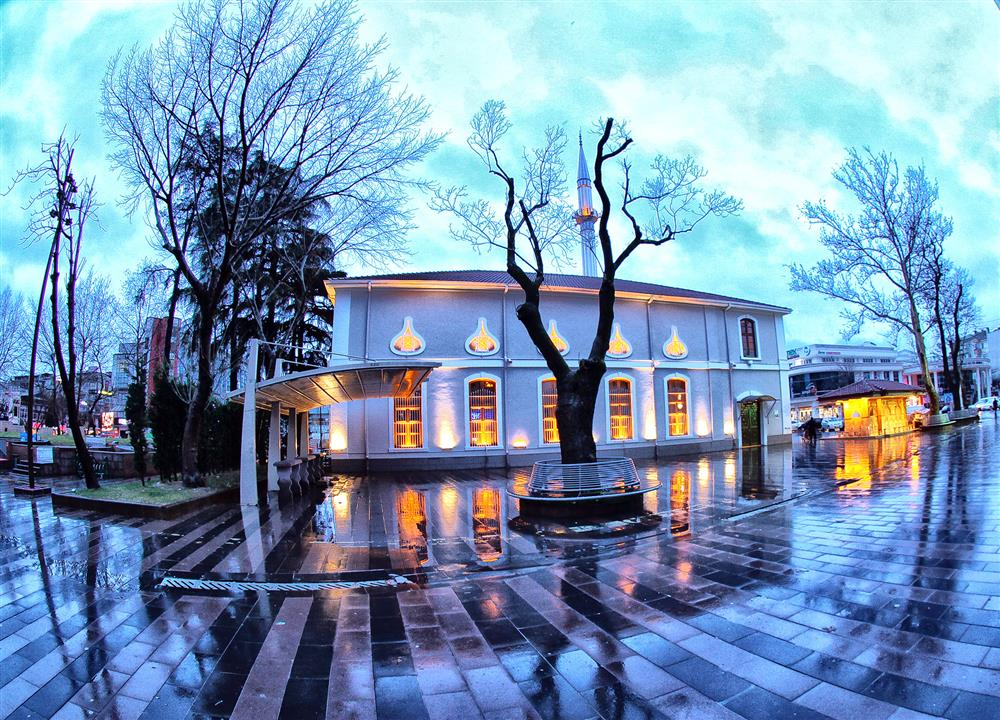
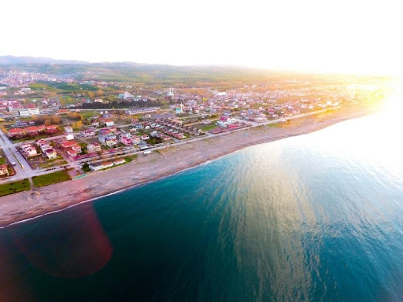
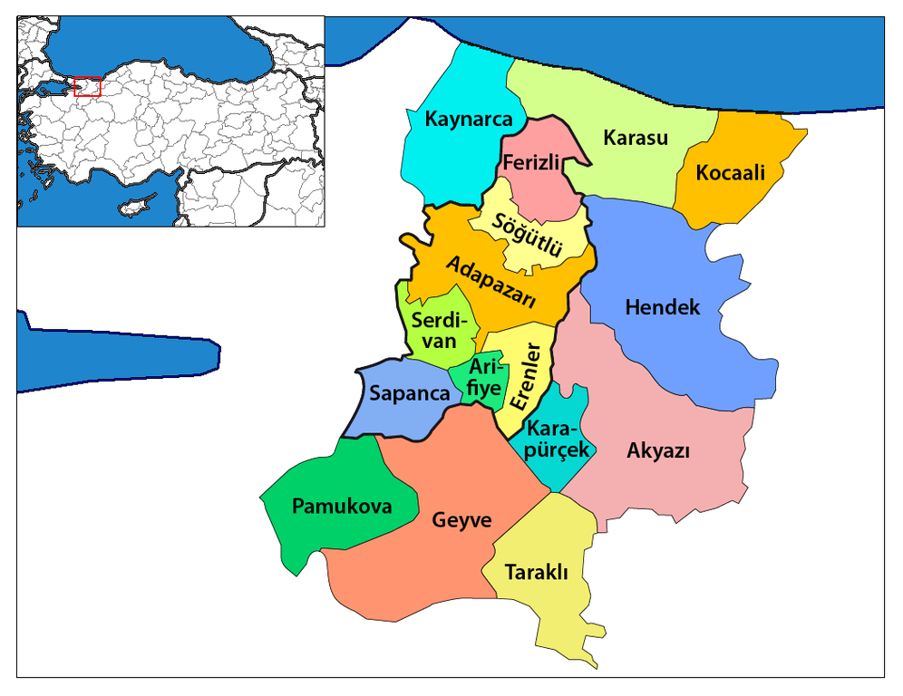
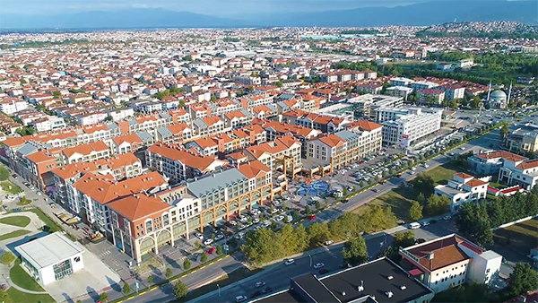

Sakarya, Türkiye'nin Marmara Bölgesi'nde yer alan önemli bir ildir. 1.098.115 kişilik nüfusu ile Marmara Bölgesi’nin sanayi ve tarım açısından gelişmiş şehirlerinden biridir. Sakarya'nın ismi, bölgeden geçen ve önemli bir doğal kaynağı olan Sakarya Nehri'nden alınmıştır. Şehir, Adapazarı adıyla bilinen merkezi ve 16 ilçesiyle geniş bir coğrafi alana yayılmaktadır. Marmara'nın en büyük şehirlerine yakınlığı, özellikle İstanbul, Kocaeli ve Bursa gibi büyük sanayi şehirlerine olan ulaşım kolaylığı, Sakarya'nın ekonomik ve ticari gücünü arttırmaktadır.
Sangarius Köprüsü veya Justinianus Köprüsü
TSapanca, Sakarya iline bağlı, doğal güzellikleriyle ünlü bir ilçedir. En bilinen yeri Sapanca Gölü’dür ve göl çevresi turistler tarafından sıkça ziyaret edilir. İlçe, İstanbul ve Ankara’ya yakınlığı sayesinde hafta sonu tatilleri için tercih edilir. Doğa yürüyüşü, kamp ve bisiklet gibi etkinlikler Sapanca’da çok yaygındır. Ayrıca bölgede birçok konaklama tesisi ve doğal ürünler satan yerler bulunmaktadır.
Karasu, Sakarya iline bağlı, Karadeniz kıyısında yer alan bir ilçedir. Geniş ve uzun sahiliyle özellikle yaz aylarında çok sayıda turist çeker. Denizi, kumsalı ve doğal güzellikleriyle tatil yapmak isteyenler için popüler bir yerdir. Ayrıca Karasu’da balıkçılık ve tarım da halkın geçim kaynakları arasındadır. Sakarya Nehri’nin denize döküldüğü yer olan Acarlar Longozu da Karasu’nun önemli doğal alanlarındandır.Karasu’da yaz aylarında düzenlenen plaj etkinlikleri ve festivaller, ilçeye ayrı bir canlılık katar. Ayrıca, doğa ile iç içe yürüyüş yapabileceğiniz Karasu Sahili ve çevresi, ziyaretçilere huzurlu bir ortam sunar. .
Geyve, Sakarya iline bağlı, doğal güzellikleri ve tarihi zenginlikleriyle bilinen bir ilçedir. İlçe, 1450 yılında inşa edilen Elvan Bey İmareti ve 1495 yılında II. Beyazıt tarafından yaptırılan Ali Fuat Paşa Köprüsü gibi önemli tarihi yapılarıyla dikkat çeker . Kırca Yaylası, doğa severler için ideal bir destinasyon olup, her yıl temmuz ayında düzenlenen şenliklerle de ünlüdür . Ayrıca, Ahibaba köyünde bulunan Acısu İçmesi, mide ve bağırsak hastalıklarına iyi geldiği düşünülen şifalı suyuyla ziyaretçileri çeker . Geyve'nin ekonomisi, bağcılık, meyvecilik ve sebzecilik gibi tarımsal faaliyetlere dayalıdır . İlçe, zengin kültürel mirası ve doğal zenginlikleriyle hem yerli hem de yabancı turistler için cazip bir yerdir.
Hendek, Batı Karadeniz ikliminin etkisi altında olup, yazları kısa ve sıcak, kışları ise uzun, karlı ve bol yağışlı geçer . İlçede fındık, mısır ve buğday gibi tarımsal ürünler yaygın olarak üretilir. Hendek, doğal güzellikleriyle de dikkat çeker; Bayraktepe, Selman Dede Türbesi, Dikmen Yaylası ve Çiğdem Yaylası gibi mekanlar hem yerli hem de yabancı turistlerin ilgisini çeker . Hendek, hem doğal hem de kültürel zenginlikleriyle Sakarya'nın önemli ilçelerinden biridir.Hendek, yıl boyunca düzenlenen kültürel etkinlikler ve yayla şenlikleriyle sosyal yaşamı oldukça hareketlidir.